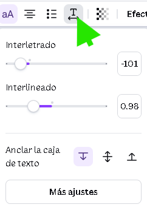
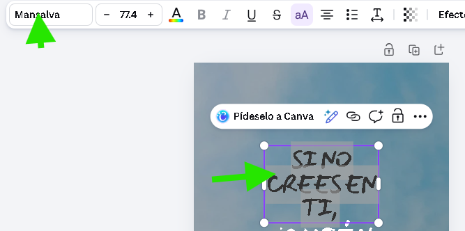
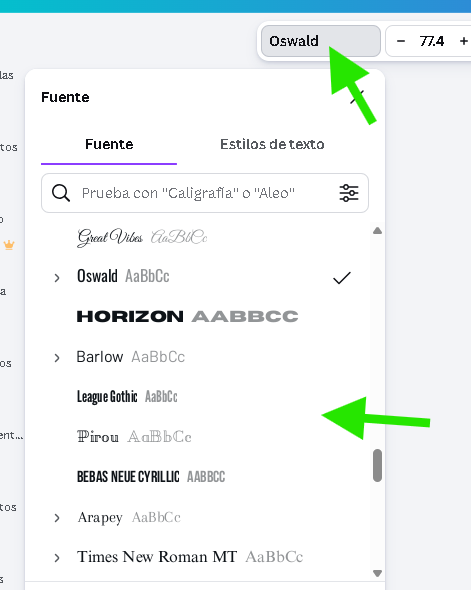

🎯 Objetivo de la Sesión
Hoy aprenderás a no trabajar desde cero. Descubriremos cómo diseccionar las Plantillas Profesionales de Canva y entenderemos la psicología detrás de las fuentes (Tipografía) para transmitir emociones correctas.
🎨 La Psicología de la Tipografía
Las letras tienen personalidad. Pasa el mouse (o toca) las tarjetas abajo para ver cuándo usarlas:
Serif (Con remates)
Elegancia, Tradición, Seriedad.
Úsala para: Invitaciones de boda, temas legales o moda de lujo.
Úsala para: Invitaciones de boda, temas legales o moda de lujo.
Sans Serif (Palo Seco)
Modernidad, Limpieza, Tecnología.
Úsala para: Posts de redes sociales, startups y títulos rápidos.
Úsala para: Posts de redes sociales, startups y títulos rápidos.
🛠️ Práctica: "Tu Frase Inspiradora"
Vamos a aplicar la teoría editando una plantilla existente.
- En el buscador de Canva, escribe "Frase Instagram".
- Selecciona una plantilla que te guste (evita las que tienen la corona "Pro" por ahora).
- Haz clic en el texto predeterminado y escribe una frase que te motive.
- Reto: Cambia la tipografía. Si la plantilla tenía una fuente "Serif", cámbiala a una "Sans Serif" y observa cómo cambia la "vibra" del diseño.
- Usa la herramienta "Espaciado" en la barra superior para ajustar el interlineado.

🧠 Desafío de Conocimiento
Cargando...
🎯 Cambia la tipografía
- has click en el texto que se muestra en la pantalla

- de la barra de herramientas que aparece selecciona la tipografia que te gusta

- Observa como cambia la "vibra" del diseño
¡Reto logrado!